라즈베리파이 VNC설정
VNC Viewer를 이용해서 라즈베리파이를 접속방법을 소개해 드리겠습니다.
그전에 라즈베리파이 OS를 설치하지 않으셨으면 아래의 링크를 클릭하신후 먼저 라즈베리파이 OS부터 설치해 주세요.
https://akibatv.net/archives/373
VNC Viewer는 아래의 사이트에서 다운로드 받을수 있습니다.
https://www.realvnc.com/en/connect/download/viewer/
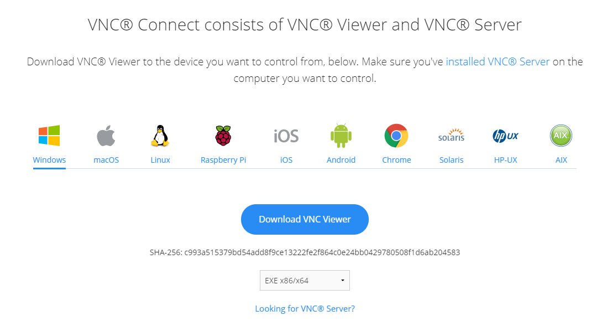
VNC Viewer를 설치후 실행을 합니다.
파일->New connection을 선택합니다.
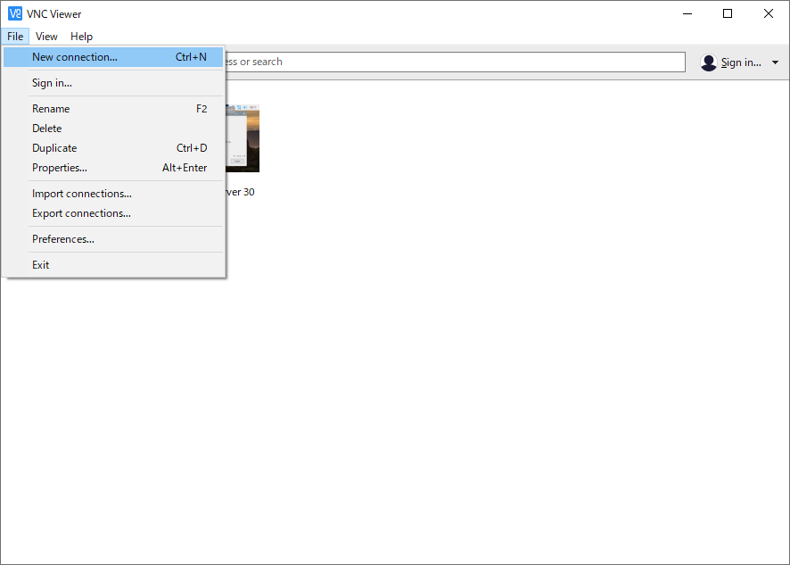
라즈베리파이의 아이피주소와 이름을 적고 OK를 눌러주세요.
다른설정은 건들일 필요는 없습니다.
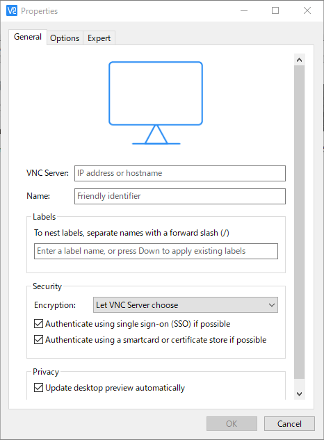
추가한 서버를 선택하면 아이디와 비밀번호 입력창이 나오게 됩니다.
아이디와 비밀번호를 입력하신후 OK를 눌러주세요.
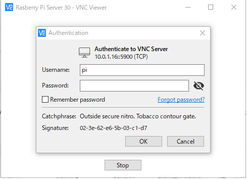
접속이 되시면 아래의 화면이 나오게 됩니다.
아래의 화면까지 나오면 일단 기본적인 VNC설정은 끝나게 됩니다.
라즈베리파이를 처음 접속하시면 기본 설정을 하라는 메세지가 나오게 되며
설정을 원하시는 분은 다음버튼 필요 없으신 분은 캔슬을 눌러주세요.
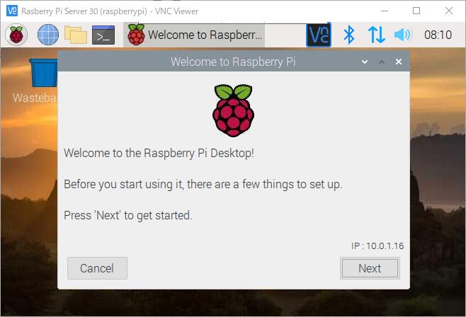
다음 버튼을 누르면 스크린설정이 나오지만 다음 버튼을 눌러서 넘어갑니다.
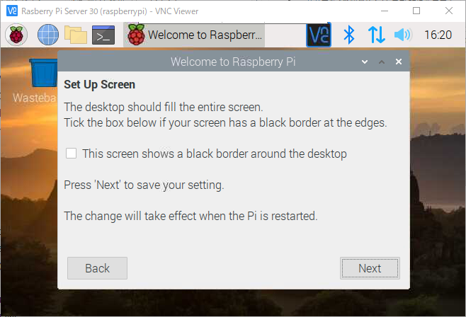
비밀번호 설정창이 나오면 새비밀번호를 입력하시고 다음버튼을 눌러주세요.
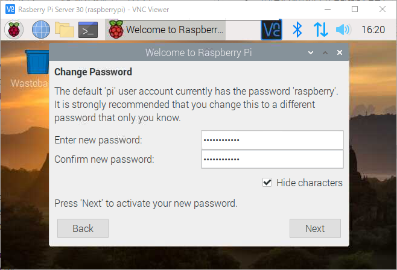
국가와 언어를 설정을 하시고 다음버튼을 눌러주세요.
저의 경우는 일본어 키보드를 설정하고 있기에 국가와 언어를 일본어로 설정하겠습니다.
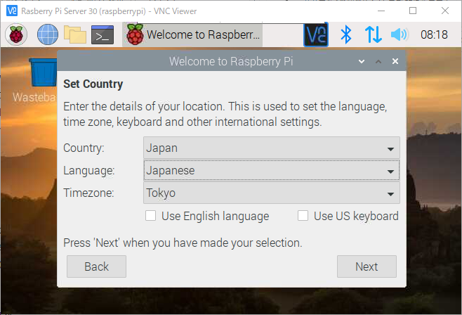
와이파이 설정 화면입니다.
와이파이 설정이 필요하신경우 설정을 해주시고 필요가 없으시면 스킵을 해주세요.
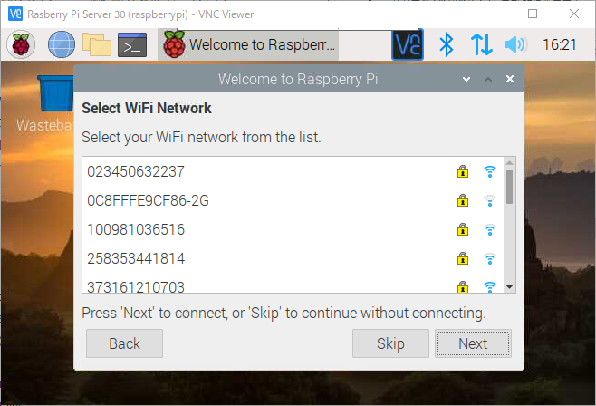
소프트웨어를 최신버전으로 업데이트 하겠냐고 물어봅니다.
일단 최신상태로 해두는게 좋기에 다음을 눌러주시는걸 추천합니다.
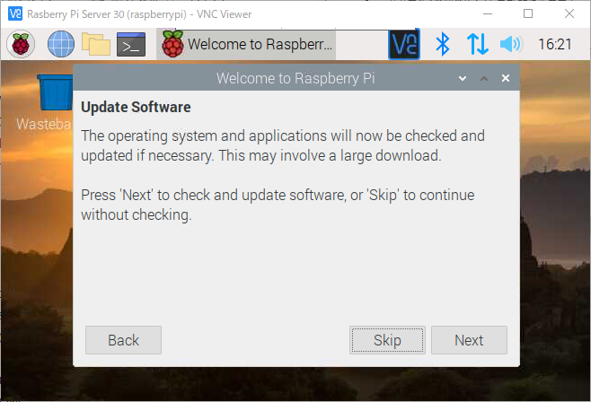
업데이트가 진행되고 있습니다.
각종 프로그램들을 최신버전으로 업데이트하기에 시간이 좀 많이 걸리겠습니다.
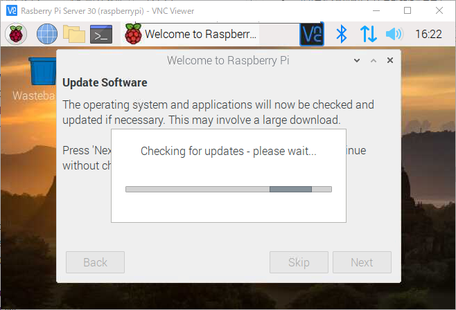
드디어 업데이트가 끝났습니다.
OK버튼을 눌러주시기 바랍니다.
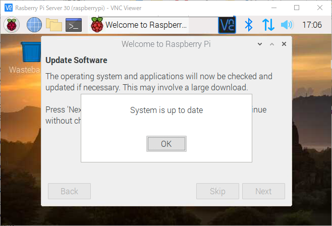
업데이트가 끝나고 재시동을 할것인지 다음에 할것인지 선택하시면
라즈베리의 기본 업데이트까지는 완료됩니다.
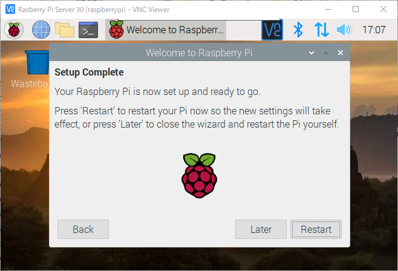